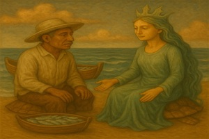
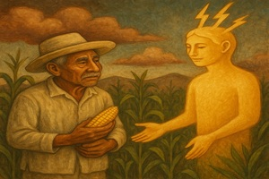
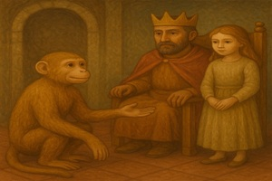
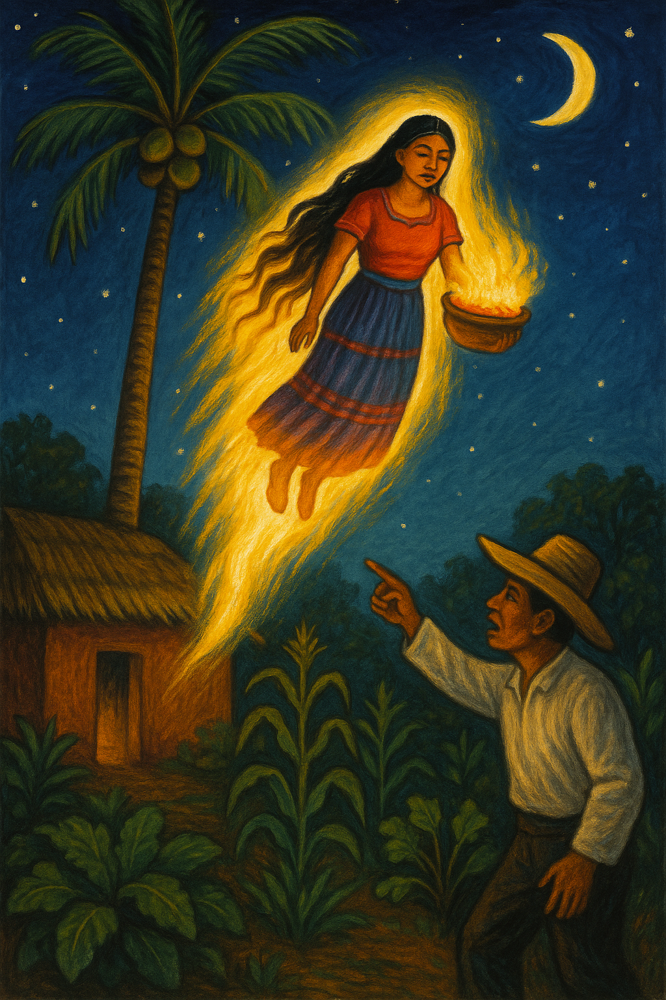
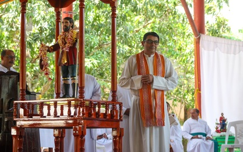
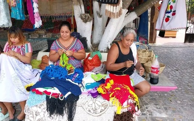
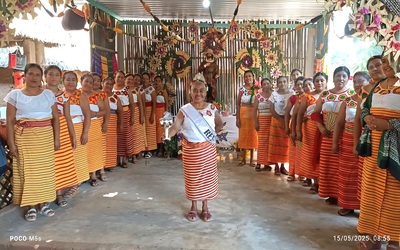

La Dueña del Agua
Un hombre se fue a pescar e hizo un compromiso con Aachane, la dueña del agua, para que le diera pescado. Ella lo llevó a su casa bajo el mar y le impuso una condición para seguir recibiendo su favor...
Historias que tejen nuestro universo

Un hombre se fue a pescar e hizo un compromiso con Aachane, la dueña del agua, para que le diera pescado. Ella lo llevó a su casa bajo el mar y le impuso una condición para seguir recibiendo su favor...
Sindiopi era el dueño original del maíz y enseñó al rayo cómo sembrarlo, pero éste cometió varios errores. Al final, el rayo se quedó con el maíz más fértil, y Sindiopi, avergonzado, se alejó...


Una joven queda misteriosamente embarazada y da a luz a un monito. Con el tiempo, el mono pide casarse con una princesa, pero el rey solo aceptará si el mono construye un palacio más grande que el suyo...
Cuentan los abuelos que hace muchos años en la tierra de Xumuapan, había una mujer que se convertía en una centella, llamada “Xitzi”. Su esposo, sospechando de sus ausencias nocturnas, la descubre y la señala, causando su muerte instantánea...


El próximo año se celebrará la fiesta patronal de Zaragoza, encomendada a San Isidro Labrador... ¡Espéralo!

La comunidad abre talleres para enseñar técnicas ancestrales de alfarería y textiles a las nuevas generaciones.

Este pasado mayo, se llevó a cabo con gran éxito la feria patrocinada por el H. Ayuntamiento de Zaragoza.
Un espacio dedicado a proyectos de investigación solicitados por escuelas y universidades, donde la comunidad puede participar y contribuir con su conocimiento ancestral.
Solicitado por: Escuela Secundaria Técnica #45
Solicitado por: Universidad Veracruzana
Solicitado por: Primaria Bilingüe Netzahualcóyotl
Fecha: 15 de Mayo, 2026
Celebración anual del Santo Patrono. Incluye danzas tradicionales, música y muestras gastronómicas.
Fecha: Sábados, Junio-Agosto 2025
Curso introductorio para aprender las bases de la lengua náhuatl, impartido por hablantes nativos.
Fecha: 12-18 de Septiembre, 2025
Muestra de obras de artistas locales que fusionan técnicas tradicionales con expresiones modernas.